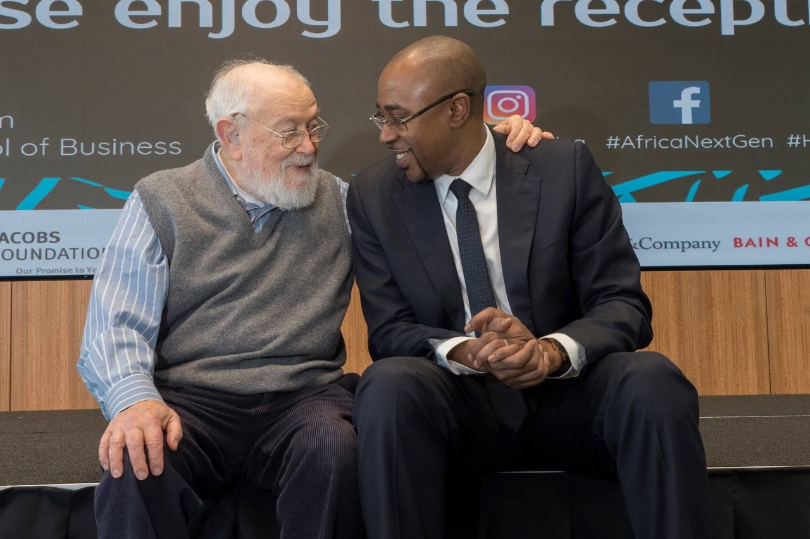
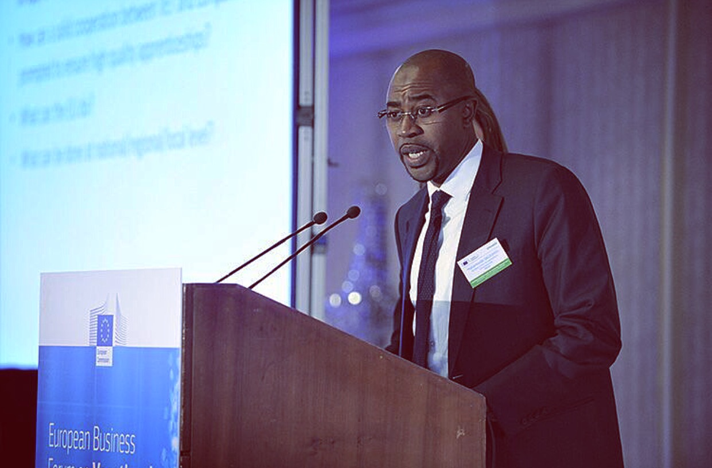
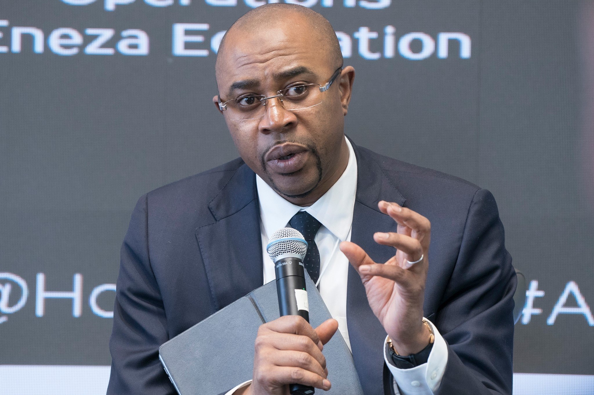

As many African, my childhood in Africa was a stark contrast to the life I lead today. Witnessing my mother's divorce at the tender age of 12 plunged me into a world of hardship and uncertainty. Hunger became a constant companion, and the thought of death a frequent visitor. Yet, amidst the darkness, a spark of resilience ignited within me. I refused to surrender to despair, finding solace in education and pursuing knowledge with firm determination. This resilience, born out of adversity, became the foundation of my success. Today I understand why all these hardship were necessary.
Education became my lifeline, offering a path to a brighter future. I embraced every opportunity to learn, believing that knowledge would empower me to overcome my circumstances. This belief in the transformative power of education echoes the words of Nelson Mandela, who said, "Education is the most powerful weapon which you can use to change the world."
Today, Professor Salouhou roams the halls of prestigious universities in Europe, the United States, India, and Africa, imparting his knowledge and inspiring generations of students. His teaching methods, infused with his unique story and deep empathy, hit the mark. He is not just a professor; he is a guide, a mentor who has himself walked the steep paths his students tread today.

Despite the challenges I faced, I refused to surrender to despair. My story is a testament to the human spirit's ability to overcome adversity, as Dr. Maya Angelou eloquently describes in her autobiography.
Driven by a thirst for knowledge, I was given the opportunity to study in France by the Cameroonian Government through an on-merit scholarship, I pursued academic excellence with solid determination. I earned three master's degrees during my life in France and a PhD in Global Leadership Education in USA while being full time employed and father of three lovely children, a testament to my commitment to personal growth and intellectual development.
Today, I stand as a professor at top universities across Europe, the USA, India, and Africa. I have earned recognition as one of the best professors by my students, inspiring and empowering countless individuals across the globe. My story aligns with the vision of Dr. Henry Louis Gates Jr., who emphasizes the importance of education in shaping our individual and collective destinies.
My unique approach to leadership development draws upon my diverse background, integrating traditional African wisdom, Islamic and Christian teachings, and modern leadership philosophies. This holistic perspective allows me to connect with individuals on a deeper level, addressing their emotional, mental, and spiritual well-being. My approach resonates with the teachings of Dr. Brené Brown, who advocates for vulnerability and authenticity in leadership.
Over the years, I have successfully coached and mentored individuals from diverse backgrounds, including mid-career professionals facing challenges, young entrepreneurs pursuing their dreams, and individuals seeking to overcome personal obstacles. My success lies not in pre-set methodologies or frameworks, but in my ability to connect with people on a deeper level, drawing upon my rich tapestry of experiences and insights. This aligns with the philosophy of Simon Sinek, who emphasizes the importance of starting with "why" in leadership.
My African upbringing instilled in me a deep sense of empathy, resilience, and the power of storytelling. These values continue to guide my approach to leadership development and mentorship, echoing the wisdom shared in Chinua Achebe's "Things Fall Apart."
My Islamic and Christian teachings provided me with a moral compass and a belief in the inherent goodness of humanity. These principles inform my interactions with others and inspire me to create a more just and equitable world, as reflected in the teachings of both the Holy Quran and the Bible.
My study of modern philosophy with Professor Koestenbaum, founder of the Leadership Diamond® methodology, helped me modernize my African teachings and translate them into a language that resonates with a global audience. This approach aligns with the work of Peter Koestenbaum, who emphasizes the importance of integrating different perspectives in leadership development.
Eastern philosophies, particularly Sadhguru's teachings on inner balance and Dr. Wayne Dyer and Eckhart Tolle's insights on self-awareness, have deepened my understanding of the human condition and enhanced my ability to guide others towards their full potential. These teachings resonate with the wisdom of ancient texts like the Vedas and the teachings of Confucius, emphasizing the importance of self-knowledge and inner harmony.
My story is a testament to the human spirit's ability to overcome adversity and create a life of purpose and impact. It is a story of resilience, transformation, and a deep commitment to empowering others to reach their full potential. My journey, from a street boy to a global leader, is a testament to the transformative power of education, the importance of resilience, and the impact we can make on the world when we dedicate ourselves to serving others. In my short life, I have the impression of someone who has travelled over few centuries.
I have been helped and supported by countless of individuals professors, teachers, students, young, old, poor, rich to whom I’m forever grateful.
Today, I’m committed to give back especially to this continent who gave me a lot.
Africa gave me life and foundation; Europe gave me Education and America gave me the entrepreneurship spirit and mindset in my passion “Education” and Asia gave me the philosophical grounding that completed my holistic approach to life.
Leave a comment